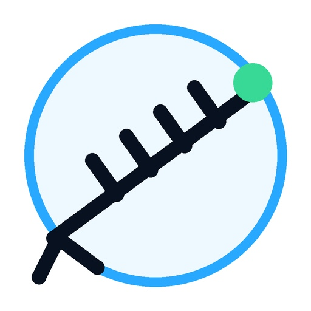

Rotor Controller F1TEQ
Installation USB — Version 1.7.3
ESP32-S3 N16R8Sécurité globaleMises à jour GitHubMaps compactes
Programmez une carte vierge ou réinstallez complètement le contrôleur depuis Chrome ou Edge, sans Arduino IDE.
Avant de commencer
- Utilisez un ordinateur et ouvrez cette page avec Google Chrome ou Microsoft Edge.
- Branchez l’ESP32-S3 avec un câble USB capable de transmettre les données.
- Fermez Arduino IDE, le moniteur série et tout logiciel utilisant le port USB.
- L’installation complète efface la configuration actuellement mémorisée sur la carte.
Installation automatique
Vérification du micrologiciel Version 1.7.3…
Principales fonctions incluses
Protection des mouvements
Arrêt des deux relais et délai de sécurité avant chaque nouvelle commande.
Arrêt des deux relais et délai de sécurité avant chaque nouvelle commande.
Parking
Bouton direct à gauche de Pilotage et position mémorisée.
Bouton direct à gauche de Pilotage et position mémorisée.
Réseau
Choix DHCP ou IP fixe avec masque, passerelle et DNS.
Choix DHCP ou IP fixe avec masque, passerelle et DNS.
Mises à jour
Vérification et installation directe depuis les Releases GitHub.
Vérification et installation directe depuis les Releases GitHub.
Pilotage par map
Cartes vectorielles et Leaflet moins hautes pour afficher les commandes plus tôt.
Cartes vectorielles et Leaflet moins hautes pour afficher les commandes plus tôt.
CAT universel
Balises, GS-232B et liaison avec F1TEQ Radio Agent.
Balises, GS-232B et liaison avec F1TEQ Radio Agent.
Après l’installation
Redémarrez la carte, puis recherchez le réseau
Mot de passe :
Adresse de configuration :
G1000DXC-CONFIG-XXXXXX.Mot de passe :
rotor1234Adresse de configuration :
http://192.168.4.1En cas de non-détection de l’ESP32
Maintenez BOOT, appuyez brièvement sur RESET/EN, relâchez RESET/EN, puis relâchez BOOT. Relancez ensuite l’installation.
Installation complète ou mise à jour ?
Cette page réalise une installation complète par USB.
Pour un contrôleur déjà en service, utilisez de préférence le menu RAZ et MAJ et la mise à jour GitHub intégrée. Ne téléversez jamais le fichier FACTORY depuis le menu Web du contrôleur.
Pour un contrôleur déjà en service, utilisez de préférence le menu RAZ et MAJ et la mise à jour GitHub intégrée. Ne téléversez jamais le fichier FACTORY depuis le menu Web du contrôleur.